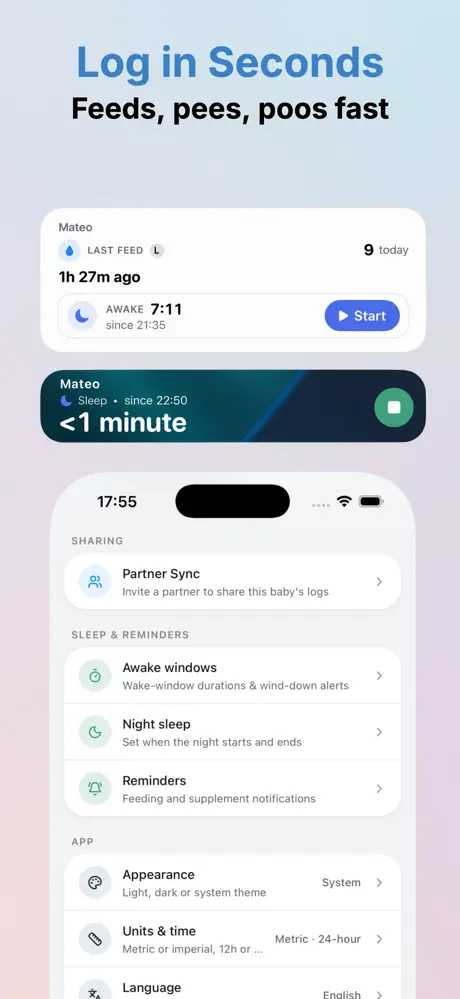
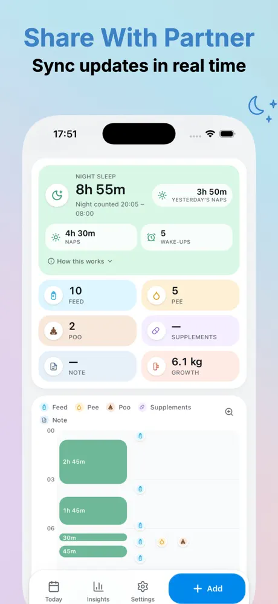
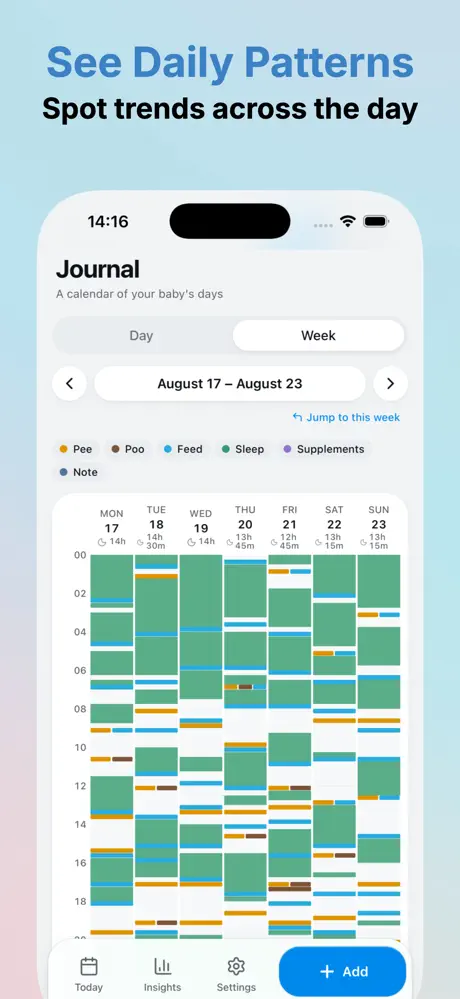
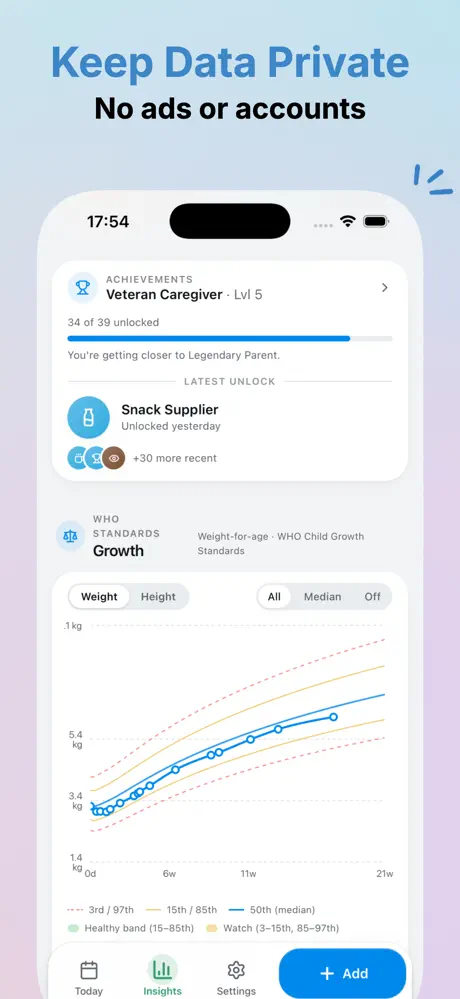

What is Bebito?
Bebito is a free baby tracker app for iPhone that helps parents log breastfeeding, bottle feeds, wet and dirty diapers, sleep and growth. Entries stay on your phone, there is no sign-up, and you can share a baby's log with your partner through iCloud.




What you can track
Feeds and diapers in one tap
Quick Log records breastfeeding with left or right side, bottle amounts, and wet or dirty diapers. You can keep logging feeds while a sleep timer is running.
Sleep timer, night sleep and awake windows
Start a sleep timer that also shows on the Lock Screen and Dynamic Island. Set your night hours and get a gentle reminder before an awake window ends.
Growth charts based on WHO standards
Weight and height are plotted against the WHO Child Growth Standards so you can see how your baby is growing over the weeks.
Daily timeline and weekly journal
See every feed, diaper and nap on a clear timeline, and spot routines across the week.
Checkup summary for the pediatrician
Create a PDF with the last two weeks of feeds, diapers, sleep and growth, plus your questions for the doctor.
Share with your partner
Partner Sync uses Apple's iCloud sharing, so both parents can log the same baby in real time.
Widgets, backup and import
Home Screen and Lock Screen widgets, automatic iCloud Drive backup, CSV and JSON export, and CSV import from Huckleberry and other baby trackers.
Private by design
Your baby's data stays on your iPhone. Bebito has no account, no analytics, no ads and no tracking, and we don't run servers that receive your entries. Partner Sync and iCloud Backup are optional and use your own iCloud. Read the privacy policy.
Why we built Bebito
“After bringing our first baby home from the hospital, we needed a simple way to track the essentials: feeds, wet diapers and dirty diapers. So we built Bebito.”
Frequently asked questions
Is Bebito free?
Yes. Bebito is free to download and use. There are no ads, no subscriptions and no in-app purchases.
Do I need to create an account?
No. Bebito has no sign-up and no login. You add your baby's name, sex and birth date on the phone and start logging straight away.
Does Bebito work offline?
Yes. Every entry is saved on your iPhone first, so logging works without a connection. Optional Partner Sync and iCloud Backup catch up in the background when you are back online.
How can two parents share the same baby log?
Turn on Partner Sync and send an invitation through Apple's iCloud sharing sheet. Sharing is per baby, and both parents can add and edit feeds, sleep, diapers and weight. Partner Sync needs iCloud on both iPhones.
Can I move my data from Huckleberry or another baby tracker?
Yes. Export a CSV file from your old app, then choose Settings, Import from another app in Bebito. The import creates a new baby profile and never changes your existing logs.
Which growth charts does Bebito use?
Weight and height are plotted against the WHO Child Growth Standards, with percentile curves from the 3rd to the 97th. The charts are a reference for conversations with your pediatrician, not a diagnosis.
Can I track twins or more than one baby?
Yes. You can add several babies, switch between them, and run a separate sleep timer for each one at the same time.
Which devices and languages does Bebito support?
Bebito runs on iPhone with iOS 17.6 or later. The app is available in English and Spanish, with metric or imperial units and 12- or 24-hour time.
Is Bebito a medical device?
No. Bebito is for personal tracking only and does not diagnose or treat any condition. Always ask your pediatrician about your baby's health. See the medical disclaimer.
Is this the same app as “Bebito: Baby & Newborn Tracker”?
No. That is a separate app from a different developer. This Bebito is made by Michal Trunek, has the App Store ID 6766536961, and is completely free with no subscription or Pro tier.